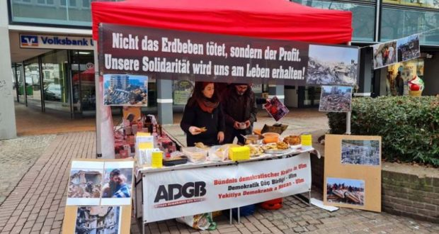
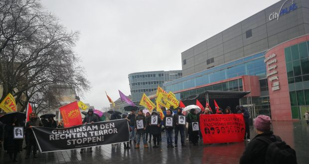

{kind=link}


[This lan. PDF][This lan. ODT][This lan. MD][This lan. TXT][This lan. TXT LIST]
Please select your language 请选择你的语言:
Author: Rosa Minine
Description: O grupo vocal e percussivo Ordinarius realiza com frequência o seu projeto de lives shows Domingueira Ordinarius. O evento acontece aos domingos, às 19h,
Publish Time: 2023-02-18T00:05:00-03:00
Modified Time: None
Updated Time: None
Images: ['Batuq19Fev.png']
Section: Agenda Cultural
Tags: ['Agenda Cultural', 'Augusto Ordine', 'Domingueira Ordinarius', 'live show', 'Maíra Martins', 'Youtube']
Type: article
O grupo vocal e percussivo Ordinarius realiza com frequência o seu projetode lives shows Domingueira Ordinarius. O evento acontece aos domingos, às19h, através do seu perfil na rede social Facebook, posteriormente disponíveisno seu canal no YouTube.
Abaixo: a live realizada no último domingo, 12/02, com Augusto Ordine eMaíra Martins , componentes do grupo.
Source: https://anovademocracia.com.br/augusto-ordine-e-maira-martins-em-domingueira-ordinarius-2/
Author: maoist
Description: None
Time: 2023-02-18T10:40:00+01:00
Images: ['loc%20Apa%2018.2.23.jpg']

Source: https://proletaricomunisti.blogspot.com/2023/02/pc-18-febbraio-assemblea-proletaria.html
Author: maoist
Description: None
Time: 2023-02-18T15:43:00+01:00
Images: ['contro%20gov.meloni.jpg']

Source: https://proletaricomunisti.blogspot.com/2023/02/blog-post.html
Author: Philippine Revolution Web Central
Publish Time: 2023-02-18T95:00:00-04:00
Modified Time: 2023-02-18T09:52:14+00:00
Description: Pinaiimbestigahan ng mga manggagawa ng Central Azucarera de Don Pedro Inc. (CADPI) at manggagawang bukid sa Batangas ang pagsasara ng asukarera ngayong taon. Pormal silang naghain ng resolusyon, kas
Images: ['batangas-sugarcane.jpg']
Categories: ['Peasants']
Type: article

Pinaiimbestigahan ng mga manggagawa ng Central Azucarera de Don Pedro Inc.(CADPI) at manggagawang bukid sa Batangas ang pagsasara ng asukarera ngayongtaon. Pormal silang naghain ng resolusyon, kasama ang blokeng Makabayan, saHouse of Representatives noong Pebrero 15 para paimbestigahan ang biglaangpagpapasara dito ng Roxas Holdings Inc. Kinapanayam din nila ang ibangkinatawan sa kongreso para makakuha ng suporta sa kanilang panawagan.
Ayon sa Sugarfolks Unity for Genuine Agricultural Reform (SUGAR)-Batangas,tinatayang 12,000 manggagawang bukid at mahigit 7,000 na maliliit na plantadorang nawalan ng kabuhayan dahil sa hindi makatarungang pagsasara ng asukarera."Sinisira nito ang lokal na industriya ng asukal hindi lamang sa prubinsya,kundi sa buong bansa," ayon pa sa grupo.
Bago nito, iginiit ng SUGAR-Batangas sa gubyerno na bilhin at pangasiwaan angoperasyon ng CADPI para maisalba ito upang palakasin ang lokal na industriyang asukal sa prubinsya.
Ayon kay Christian Bearo, tagapagsalita ng SUGAR, lubhang maapektuhan nito angmga plantador sa Batangas dahil 4,500 metriko toneladang asukal lamang kadaaraw ang kayang gilingin ng nalalabing sugar mill sa prubinsya kumpara sakapasidad ng CADPI na 12,000 metriko tonelada kada araw. Sa taya noong 2020,sinasaklaw ng CADPI ang 10,980 ektarya ng tubuhan sa prubinsya.
Paliwanag ni Bearo, naunang nangako ang lokal na gubyerno ng Batangas nabayaran ang gastos sa transportasyon na ₱30,000 kada trak para ibyahe ang mgatubo tungong Central Azucarera de Tarlac (CAT). Subalit anito, hindi kayangsagutin ng lokal na gubyerno ang gastos para sa 200 trak kada araw na umaabotsa halos ₱6 milyon.
Naiulat din na magbibigay ng ₱80 milyong ayuda sa 2,000 manggagawa at maliliitang plantador para makaagapay. Reklamo ng SUGAR, di ito sapat at kaunti lamangang masasaklaw nitong manggagawa at plantador. Giit ni Bearo, dapat itongmagbigay ng subsidyo sa paggawa sa lahat ng mga manggagawa sa tubuhan nabahagi ng produksyon at sapat na kumpensasyon laluna sa maliliit na plantador.
Insulto umano ang kainutilan ng Sugar Regulatory Administration (SRA) nasinabi nitong ang tanging magagawa nito ay kumbinsihin ang CADPI na mulingmagbukas para sa taong ito.
Ayon sa SUGAR, dapat bigyan ng gubyerno ng subsidyo sa produksyon ang maliliitna plantador, laluna ang pataba. Bukod ito sa pagbili sa gilingan.
Binatikos ng National Federation of Sugar Workers (NFSW) ang kawalang tugon niMarcos Jr at pagtutulak nito na papasukin ang kumpanyang DATAGRO na nakabasesa Brazil para umagapay diumano sa suplay ng asukal sa bansa at sa produksyonng ethanol.
Author: Philippine Revolution Web Central
Publish Time: 2023-02-18T96:00:00-04:00
Modified Time: None
Description: Magpapalala lamang sa climate crisis ang planong itayong waste-to-enery (WTE) incinerator ng lokal na gubyerno ng Davao City. Magsusunog ito ng mga plastik at lilikha ito ng greenhouse gas at naka
Images: ['wte-sdm-photo-from-sustainable-davao-movement.webp']
Categories: ['Enivronment', "People's Struggles"]
Type: article

Magpapalala lamang sa climate crisis ang planong itayong waste-to-enery (WTE)incinerator ng lokal na gubyerno ng Davao City. Magsusunog ito ng mga plastikat lilikha ito ng greenhouse gas at nakalalasong usok, ayon sa mga grupongmaka-kalikasan.
“Hindi WTE incinerator ang sagot sa limitadong kapasidad para sa koleksyon atsegregation (paghiwa-hiwalay) ng basura ng Davao City,” ayon sa EcowasteCoalition, isa sa mga tumututol sa proyekto. Sa halip dapat nitong ipatupadang ecological solid waste management at itaguyod ang mga sistemang Zero Waste(pagbabawas ng basura) at mga inobasyon na makatarungan at angkop para samaayos na pagliligpit ng basura. Tinukoy din nilang labag ito sa Clean Air Actof 1999.
Alinsunod sa datos ng lokal na gubyerno, umaabot sa 600 hanggang 650toneladang basura ang nalilikha ng syudad kada araw. Kahalati nito aybiodegrable at sa gayon ay di kinakailangang sunugin. Sa kasalukuyan, dinadalaang mga ito sa isang tambakan sa Barangay New Carmen sa Tugbok District. Noonpang 2016 napuno ang naturang tambakan, na may kapasidad lamang na 700,000hanggang 800,000 tonelada. Ayon sa syudad, nasa 900,000 tonelada na angnaitambak na basura sa lugar.
Nakatakdang itayo ang incinerator sa 10-ektaryang lupang agrikultural sa BiaoEscuela na saklaw pa rin ng Tugbok District. Ang pagsusunog ng basura dito aymakaaapekto sa kalusugan ng mga residente sa 20 komunidad sa loob ng10-kilometrong radius ng proyekto.
Tutustusan ng utang at magastos na proyekto
Liban sa mapanira, magastos ang proyektong incinerator na may halagang ₱5.23bilyon. Manggagaling sa kaban ng syudad ang ₱3.5 bilyon, katumbas sa 60% ngbadget ng buong Department of Environment and Natural Resources. Angnatitirang ₱2.052 bilyon ay tutustusan ng utang mula Japan.
Noong Enero, inilabas ang isang pahayag na pinirmahan ng 71 maka-kalikasanggrupo para ipanawagan sa gubyerno ng Japan na itigil ang suporta nito sanaturang proyekto. Binatikos nito ang Japan International Cooperation Agencysa kawalan nito ng accountability sa “maling mga solusyon sa wastemanaagement” sa Davao City. Ito ay matapos itanggi ng JICA na pinopondohannito ang proyekto.
“Mula 2010, susi na ang Japan sa pagpasok ng mga WTE incinerators sa DavaoCIty,” ayon sa pinag-isang pahayag. Tuso nitong itinulak ang proyekto sailalim ng isang “collaboration program” sa pribadong sektor para sa“diseminasyon” o pagpapalaganap ng teknolohiyang Japanese. Sa aktwal,nagkaroon ng kasunduan ang gubyerno ng Japan at Pilipinas noong 2019 sapamumuno ni Rodrigo Duterte.
Source: https://philippinerevolution.nu/angbayan/pagtatayo-ng-incinerator-sa-davao-city-tinutulan/
Author: Philippine Revolution Web Central
Publish Time: 2023-02-18T98:00:00-04:00
Modified Time: 2023-02-18T12:16:13+00:00
Description: Tinawag ng mga magsasaka sa ilalim ng Kilusang Magbubukid ng Pilipinas na “walang alam sa pagsasaka” at “manhid” si Ferdinand Marcos Jr matapos imungkahi nitong tamnan ng binhing hybrid ang
Images: ['hybrid-seeds.webp']
Categories: ['Peasants']
Type: article

Tinawag ng mga magsasaka sa ilalim ng Kilusang Magbubukid ng Pilipinas na“walang alam sa pagsasaka” at “manhid” si Ferdinand Marcos Jr mataposimungkahi nitong tamnan ng binhing hybrid ang may 1.9 milyong ektaryangpalayan sa susunod na apat na taon. Target itong ipatupad sa Panay, EasternVisayas, SOCCSKARGEN at BARMM.
“Katulad lamang itong hybrid seed program sa Masagana 99 ni Marcos Sr nanagtali sa mga magsasaka sa mga binhing high-yielding (mataas ang produksyon)at nakaasa sa mga kemikal, mamahaling pataba at pestisidyo,” ayon kay Ka PaengMariano ng KMP.
Mapipiltang laging bumili ng bihin ang mga magsasaka kung binhing hybrid angipatatanim sa kanila, ayon kay Ka Paeng. Ito ay dahil hindi pwedeng ibinhi angmga buto nito, di katulad ng inbred o sertipikadong mga binhi.
“Kaiba sa (sertipikadong mga buto), ang mga hybrid (na buto) ay hindi napwedeng i-binhi. Palaging bibili ang magsasaka. Ang kumpanya ng hybrid seedsang may tiyak na kita dito,” aniya. Binatikos ang SL Agritech Corporation,isang kumpanyang nagbebenta ng hybrid seeds, na nangunguna sa pagtutulak sanaturang programa.
“Dapat magparami tayo ng klase ng binhi ng palay, tuloy-tuloy lang ang(pagpapaunlad ng buto) ng palay at palakasin ang produksyon ng lokal napalay,” paliwanag ni Ka Paeng. “Kapag taniman, nakapagtatabi ng binhi ang mgamagsasaka, nakakapagpalitan din sila ng binhi (seed exchange). Kapag hybridrice seeds lang ang ipatatanim, hindi na pwede ito.”
“Huwag lang iisa o iilang klase binhi ng palay ang dapat itanim. Kapag ganito,magkakaroon ng erosion of genetic diversities (pagkawala ng pagkakaiba-iba).Kung may genetic uniformities o iisa lang ang binhi, kapag tinamaan ng sakit,peste o virus ang palay, salanta agad. Ganun ang nangyari sa IR8 sa Masagana99ni Marcos Sr. ‘Yung resistance (o kakayahang lumaban) ng pananim na palayhumihina din pagtagal ng panahon kaya dapat patuloy ang breeding atconservation ng mga binhi. Marami na rin tayong improved inbred varieties ngpalay kaya hindi dapat ipilit ang hybrid rice lang.”
Nagsimulang kontrolin ng malalaking kumpanyang kemikal at agribisnes angagrikultura sa pamamagitan ng pagtataguyod ng International Rice ReseachInstitute ng mga genetically modified na binhi ng palay na pumatay sa mahigit4,000 tradisyunal at makalumang klase ng bigas.
Lahat ng mga binhi ay dapat libreng gamitin, iimbak, paghaluin at ibentaninuman, ayon naman sa KMP.
Source: https://philippinerevolution.nu/angbayan/hybrid-seeds-program-ni-marcos-itinakwil-ng-mga-magsasaka/
Author: Rosa Minine
Description: O bar Batuq Casa do Samba tem realizado uma série de show presenciais e disponibilizado os mesmos no seu canal no YouTube. Entre eles está a roda de samba
Publish Time: 2023-02-19T00:05:00-03:00
Modified Time: None
Updated Time: None
Images: ['Ordinarius18Fev.png']
Section: Agenda Cultural
Tags: ['Agenda Cultural', 'Batuq Casa do Samba', 'compositor', 'Luiz Carlos da Vila', 'Youtube']
Type: article

O bar Batuq Casa do Samba tem realizado uma série de show presenciais edisponibilizado os mesmos no seu canal no YouTube. Entre eles está a roda desamba Luiz Carlos da Vila "Um Cantar a Vontade", uma homenagem aocompositor e sambista Luiz Carlos da Vila (1949 - 2008).
Endereço do Batuq Casa do Samba: rua Belizário Pena, 1141, Penha, Rio deJaneiro/RJ.
Abaixo: O vídeo
Source: https://anovademocracia.com.br/roda-de-samba-online-homenagem-a-luiz-carlos-da-vila/
Author: Alan Warsaw
Publish Time: 2023-02-19T05:05:43+00:00
Update Time: 2023-02-19T18:06:24+00:00
Images: ['13342_l-800x445.jpg']
Tags: ['Bastar', 'Bastar District', 'Bastar Division', 'Bastar Region', 'Chhattisgarh', 'CPI (maoist)', 'CPI(maoist)', 'India', 'Kanker District', 'Naxal', 'naxalites', 'naxals', 'police', 'PPW in India', 'Raipur', 'Raipur District']
Categories: ['India', "People's War"]

Kanker District, February 19, 2023: A squadron of Naxalites have set blazethree machines engaged in road construction work in Chhattisgarh's Kankerdistrict, police said on Sunday.
No one was injured in the raid which took place on Saturday evening betweenKamteda and Gattakal villages under Partapur police station limits, about 200km from the State capital Raipur, Additional Superintendent of Police(Pakhanjore) Dhirendra Patel said.
The road construction work was being carried out under the Prime Minister GramSadak Yojna.
According to preliminary information, a group of armed Naxalites, clad inuniform, stormed the construction site, ordered the workers to stop the workand confiscated their mobile phones, the official said.
The Naxalites then set ablaze two earth-moving machines and a mixture machineand fled, he said.
Soon after being alerted, a police team was sent to the spot, Mr. Patel said,adding a search operation was underway there to trace the Naxals responsiblefor the raid.
Naxalites have frequently attempted to disrupt road construction works inChhattisgarh's Bastar division, which consists of seven districts includingKanker, by launching attacks on security forces and damaging the roads,vehicles and machines used in the work, according to police.
Source : https://www.thehindu.com/news/national/other-states/naxalites-> torch-3-machines-engaged-in-road-construction-work-in-> chhattisgarh/article66528290.ece
Author: maoistroad
Description: None
Time: 2023-02-19T10:45:00-08:00
Images: []
Source: https://maoistroad.blogspot.com/2023/02/comrades-from-bulgarian-workers-and.html
Author: Tjen Folket Media
Description: Siden 2020 har den rikeste prosentandelen av verdens befolkning tjent nesten to tredjedeler av de 42 billioner dollar verider skapt i perioden. Dette melder organisasjonen Oxfam I sin rapport for j…
Publish Time: 2023-02-19T12:20:37+00:00
Modified Time: 2023-02-19T12:39:15+00:00
Images: ['fattigdom1-1160x721.jpg']
Tags: None
Category: 'Internasjonalt'

Av en kommentator for Tjen Folket Media.
Siden 2020 har den rikeste prosentandelen av verdens befolkning tjent nestento tredjedeler av de 42 billioner dollar verider skapt i perioden. Dettemelder organisasjonen Oxfam I sin rapport for januar 2023. Dette er en økningpå toppen av allerede rekordhøye nivåer av akkumulering. Dette «normalnivået»var at den øverste prosentandelen tjente inn halvparten. Rapporten legge fremtall som virkelig kan få en til å se rødt med tanke på verdenssituasjonen idag. Det legges videre fram i rapporten at milliardærers formue vokser 2.7milliarder dollar om dagen. For hver dollar en av de laveste 90% tjener håveren milliardær inn 1,7 millioner dollar.
Rapporten beregner at over 50% av inflasjonen i Australia, USA og Europakommer av bedrifters profittmaksimering. Denne inflasjonen løper allerede fralønningene til over 1,7 milliarder på verdensbasis, noe som er mer ennbefolkningen i India. Verdensbanken har innrømmet at fremgangen mot deres målom å utslette ekstrem fattigdom har stanset opp. Økende matpriser ogstrømkrisen som herjer i mange land har også kommet millardærene til gode.Mat- og energiselskaper har mer en doblet sine profitter i 2022. Dette førtetil at de kunne betale 257 milliarder dollar i utbytte til aksjeeierne.
Pandemien har vært sterk medvind for mange av de superrike. Offentlige midlerble i mange land pumpet inn i økonomien, noe som drev opp prisene og dermedformuene til de rikeste. Dette samtidig som millioner av mennesker har mistetlivet av coronaviruset.
Rapporten kalkulerer at over de neste fem årene vil tre fjerdedeler avstatsapparater innstramme budsjettene sine kraftig. Kuttene kalkuleres til 7,8billioner dollar tilsammen.
Dettte etter det har gått en bølge av skattekutt over mange av landene ovenformilliardærene. Bare 4 prosent av hver skattekrone kommer fra formueskatter.Halvparten av verdens milliardærer bor i land uten arveskatt eller avgift.Dette betyr at 5 billioner vil bli passert skattefritt til neste generasjonmiliardærer.
Vi ser det mer og mer, som aldri før, legemliggjøringen av det Karl Marx kaltepauperismen. Rikdommen konsentreres på færre og færre hender. Med andre ord;de rike blir rike samtidig som de fattige blir fattigere. Som formann Gonzalo,leder for den peruanske revolusjonen og Perus kommunistiske parti sa: «Nødeksisterer ved sida av fabelaktig rikdom, sjøl utopister vet at de begge erforbundet: En kolossal og utfordrende rikdom ved sida av en avslørende ogskrikende fattigdom. Dette er fordi det finnes utbytting».
Dette er kapitalismen, som i dag er i sitt andre og siste stadium,imperialismen. Imperialismen er døende og råtnende kapitalisme, og videre servi nå at den er i et dypt stadie av forråtnelse. Men vi vet at alt går gjennomen prosess med fødsel og død. Det nye blir født og det gamle dør.Imperialismen er døende, og den perverse elendigheten vi ser finne sted er etuttrykk for nettopp dette. Imperialismen går mot stupet, og den har ingen veitilbake. De fattige er de som er mest disponert for å gjøre opprør. Vi vet frafør at kapitalismen har, i arbeiderklassen, skapt sine egne banemenn. Denøkende og fordypende fattigdommen vil bare fortgang i dens undergang.
Referanse: www.oxfam.org/en/research/survival-richest
Author: Giovanna Maria
Description: No dia 17 de fevereiro, massas que protestavam contra a miséria e a carestia se rebelaram na capital do país sul-americano, Paramaribo, e invadiram o
Publish Time: 2023-02-19T16:54:54-03:00
Modified Time: 2023-02-19T16:57:25-03:00
Updated Time: 2023-02-19T16:57:25-03:00
Images: ['Protesters-break-into-the-Suriname-Parliament-building-News.jpg', 'svg+xml;base64,PHN2ZyB4bWxucz0iaHR0cDovL3d3dy53My5vcmcvMjAwMC9zdmciIHdpZHRoPSIxMDk4IiBoZWlnaHQ9IjczMiIgdmlld0JveD0iMCAwIDEwOTggNzMyIj48cmVjdCB3aWR0aD0iMTAwJSIgaGVpZ2h0PSIxMDAlIiBzdHlsZT0iZmlsbDojY2ZkNGRiO2ZpbGwtb3BhY2l0eTogMC4xOyIvPjwvc3ZnPg==', 'svg+xml;base64,PHN2ZyB4bWxucz0iaHR0cDovL3d3dy53My5vcmcvMjAwMC9zdmciIHdpZHRoPSI5MDAiIGhlaWdodD0iNTA2IiB2aWV3Qm94PSIwIDAgOTAwIDUwNiI+PHJlY3Qgd2lkdGg9IjEwMCUiIGhlaWdodD0iMTAwJSIgc3R5bGU9ImZpbGw6I2NmZDRkYjtmaWxsLW9wYWNpdHk6IDAuMTsiLz48L3N2Zz4=', 'svg+xml;base64,PHN2ZyB4bWxucz0iaHR0cDovL3d3dy53My5vcmcvMjAwMC9zdmciIHdpZHRoPSIxMjAwIiBoZWlnaHQ9IjY3NSIgdmlld0JveD0iMCAwIDEyMDAgNjc1Ij48cmVjdCB3aWR0aD0iMTAwJSIgaGVpZ2h0PSIxMDAlIiBzdHlsZT0iZmlsbDojY2ZkNGRiO2ZpbGwtb3BhY2l0eTogMC4xOyIvPjwvc3ZnPg==']
Section: América Latina
Tags: ['fmi', 'Luta Classista', 'Protestos']
Type: article

No dia 17 de fevereiro, massas que protestavam contra a miséria e a carestiase rebelaram na capital do país sul-americano, Paramaribo, e invadiram oparlamento. As manifestações se iniciaram contra as medidas de austeridadeaplicadas pelo governo vende-pátria de Chan Santokhi, que acabou com subsídiosà eletricidade, gasolina e outro. O objetivo das medidas é cumprir com umacordo bilionário com o Fundo Monetário Internacional (FMI). O país éconsiderado o menor da América Latina, com uma população de 610 mil pessoas eseu povo sofre com a alta inflação.
A rebelião popular ocorre em seguida a uma greve geral de dois dias detrabalhadores de todo o país em defesa dos seus direitos e contra os saláriosde miséria. No ano de 2022, a inflação no país foi de pelo menos 54%.
Manifestantesprotestam em Paramaribo contra medidas anti-povo impostas pelo FMI. Foto: AFP
No protesto de 17/02, cerca de 2 mil pessoas se reuniram pela manhã no centroda capital Paramaribo para protestar contra o aumento dos preços dosalimentos, da gasolina e da eletricidade, assim como um novo imposto sobre ocomércio e pequenos negócios. Em fúria contra o governo de Chan Santokhi, opovo avançou contra o parlamento com garrafas e pedras, rompendo o cordãopolicial no local. As forças de repressão tentaram em vão conter a rebeliãodas massas contra a miséria, que tomaram as ruas do centro da cidade,confiscaram lojas com produtos básicos e incendiaram prédios ligados aogoverno.
Povoinvade a Assembleia Nacional durante um protesto contra a carestia emParamaribo, Suriname. Foto: Ranu Abhelakh/AFP
Agnes, mãe de três filhos, expôs em entrevista ao monopólio de imprensa AFPsobre sua participação nos protestos: "Saí mais cedo do trabalho para me unirao protesto. Não chego nem à metade do mês, tenho três crianças para alimentare dois empregos. Todos os dias os preços sobem".
"Não consigo mais pagar a gasolina para ir trabalhar e levar meus filhos àescola", afirmou Alfred, outro manifestante, que também não quis dizer seusobrenome.
No ano de 2022, o governo firmou um acordo de 690 milhões de dólares (R$ 3,6bilhões) com o FMI, que afundou o país ainda mais na miséria e aplicou asmedidas de austeridade contra as quais o povo hoje se rebela.
Presidente Chan Santokhi com Antony Blinken, secretário ianque. Foto: Gabinetedo presidente do Suriname
Buscando reimpulsionar o capitalismo burocrático no país, o atual governo àfrente do velho Estado do Suriname, ex-colônia holandesa, vende cada vez maiso país ao imperialismo ianque após a descoberta de petróleo no território.
Em 2020, logo após a eleição de Chan Santokhi, o imperialismo ianque (EstadosUnidos/USA) organizou visitas diplomáticas ao Suriname, diante da descobertade petróleo. O então secretário do USA, Mike Pompeo, visitou o país e exigiuque o USA fosse o principal beneficiário do petróleo, e não a China. Já no anode 2022, o presidente do Suriname se encontrou com o novo secretário ianque,Antony J. Blinken.
Source: https://anovademocracia.com.br/suriname-povo-se-rebela-e-invade-o-parlamento-contra-medidas-do-fmi/
Author: fiorerosso
Description: Di Leonardo Bison 19 febbraio Era subito apparsa un’aggressione violenta e vigliacca, rischia di trasformarsi in un problema anche per il go...
Time: 2023-02-19T18:12:00+01:00
Images: ['download%20(1).jpg', 'FB_IMG_1676821422147.jpg']
.jpg)
Di Leonardo Bison
19 febbraio
Era subito apparsa un'aggressione violenta e vigliacca, rischia ditrasformarsi in un problema anche per il governo. Ieri mattina, all'ingressodella scuola, in sei, di cui tre maggiorenni, tutti militanti di AzioneStudentesca, hanno aggredito due studenti del liceo classico Michelangelo, invia della colonna a Firenze. Sembra sia stata l'opposizione a un volantinaggioa scatenare la reazione violenta dei sei: i due studenti aggrediti militanonel collettivo di sinistra Sum. Già dalla mattina il video del pestaggio,avvenuto di fronte a decine di persone, ha iniziato a rimbalzare su tutti isocial, data anche la dinamica
evidente dalle immagini e subito confermata dalla preside Rita Gaeta che hachiamato la polizia. Gli aggressori, che hanno tra l'altro preso a calci unragazzo gettato a terra, non erano studenti della scuola.
Nelle ore successive la questura ha identificato, in loco e nelle immagini,gli aggressori in sei giovani militanti di As, movimento di estrema destra, dicui tre più che ventenni. La polizia conferma che dalle testimonianze emergecome sarebbero stati i sei ad iniziare le violenze: sul punto sono in corsoaccertamenti. Per loro scatterà una segnalazione per manifestazione nonpreavvisata, mentre per le lesioni personali si attende che i due studentiaggrediti presentino querela. Alla magistratura spetterà di valutare leipotesi di reato.
Azione studentesca è una divisione, per le scuole superiori, di GioventùNazionale, il movimento giovanile creato da Fratelli d'Italia. Evoluzione diAzione Giovani e del Fronte della Gioventù, è stato definito "palestra" dellaclasse dirigente di Fratelli d'Italia dalla premier Giorgia Meloni - che inquei movimenti si è formata - in occasione dell'ultimo congresso, nel 2021.
Il legame del gruppo con il partito è cosa nota. Anche per questo in tanti,nell'arco politico e in rete, hanno subito chiesto al governo e in particolarealla premier di condannare quella che il sindaco di Firenze per primo avevadefinito "aggressione squadrista".
"Episodi che non vanno minimizzati" per l'assessora all'istruzione dellaToscana, Alessandra Nardini. Le reazioni politiche sono proseguite per tuttala giornata. Ma per ora, da FdI è arrivata solo una nota del coordinamentocittadino del Partito a Firenze, che parla di "profondo rammarico per gliscontri" e una condanna di "ogni forma di violenza da chiunque esercitata".Nota precedente l'identificazione di tutti gli aggressori come militanti diAzione Studentesca. Poco, di fronte a un atto collettivo di tale violenza.
Liliana Omegna.

Source: https://proletaricomunisti.blogspot.com/2023/02/pc-19-febbraio-firenze-i-giovani-fdi.html
Author: fannyhill
Description: Augusta Montaruli, torinese, fedelissima di Giorgia Meloni, viceministra del Ministero dell’Università e della Ricerca condanna in via defin...
Time: 2023-02-19T18:30:00+01:00
Images: []
Augusta Montaruli, torinese, fedelissima di Giorgia Meloni, viceministra delMinistero dell 'Università e della Ricerca condanna in via definitiva da partedella Cassazione a un anno e sei mesi per uso improprio dei fondi del gruppoconsiliari del Piemonte, negli anni dal 2010 al 2014, quando era consigliera aPalazzo Lascaris.
Tra gli scontrini contestati: cristalli Swarovski, borse e vestiti griffatie libri hot come Sexploration. Giochi proibiti per coppie.
Augusta Montaruli, prima nel Fuan, all'università, e in Azione Giovani (lagiovanile di Alleanza Nazionale), ritratta col braccio destro teso in una fotodi gruppo a Predappio. Poi, nel Popolo della libertà (quando An ci confluisce)e in Fratelli d'Italia dalla sua fondazione.
Source: https://proletaricomunisti.blogspot.com/2023/02/pc-19-febbraio-un-governo-della-meloni.html
Author: Tjen Folket Media
Description: 27. og 28. januar ble syv israelere drept og 12 såret som følge av to angrep utført av den palestinske nasjonale motstandsbevegelsen i Øst-Jerusalem, et område som er annektert og okkupert av Israe…
Publish Time: 2023-02-19T20:12:40+00:00
Modified Time: 2023-02-19T20:23:59+00:00
Images: ['israelsk-soldat.png']
Tags: None
Category: 'Midt-Østen'

Av en kommentator for Tjen Folket Media.
27. og 28. januar ble syv israelere drept og 12 såret som følge av toangrep utført av den palestinske nasjonale motstandsbevegelsen i Øst-Jerusalem, et område som er annektert og okkupert av Israel. Angrepene skjeddeetter at ti palestinere ble drept av sionistiske tropper fra staten Israel iden palestinske byen Jenin.
26. januar drepte den israelske hæren 10 palestinere og skadet 20 andre underen militæroperasjon i Jenin på den okkuperte Vestbredden. Operasjonen varretta mot flere hjem, en flyktningleir og et sykehus. Den ble rettferdiggjortsom en aksjon mot såkalte «terrorister», som den nasjonalefrigjøringsbevegelsen og andre motstandsbevegelser kalles.
Dem Volke Dienen skriver at blant de døde var, i tillegg til flere unge menn,en 61 år gammel kvinne som bokstavelig talt ble henrettet i sitt eget hjem medet nakkeskudd. I tillegg ble en tåregassgranat skutt inn i en barneavdeling pået lokalt sykehus og skadet flere barn.
Medlemmer av de nasjonale frigjøringsorganisasjonene Hamas og Islamsk Jihadforsvarte seg mot massakren, noen med skytevåpen. Med dette aggressiveangrepet vokser også motstanden fra det palestinske folket. Ettermilitæroperasjonen i Jenin avfyrte Hamas to raketter mot Israel fraGazastripen. I den forbindelse tok folkemengder til gatene for å protesteremot okkupasjonen og de pågående reaksjonære operasjonene. I Jerusalem skjøtisraelske sikkerhetsstyrker mot en demonstrasjon og drepte en 22 år gammelpalestiner. Så, fredag 27. januar, bombet Israel den tett befolkedeGazastripen. Ifølge offisielle uttalelser ble bare militære stillingerangrepet, noe Israel offisielt kunngjør etter hvert bombardement.
Israels nye reaksjonære regjering har også iverksatt sine nye såkalte«antiterrorlover» siden helgen. Disse lovene gjør det mulig å evakuere ogødelegge hjemmene til alle som Israel anser som terrorister. Videre vilfamilier til såkalte terrorister bli plassert i slektskapsinternering ved åbli fratatt sine rettigheter bare fordi de er i slekt. Disse tiltakene økerundertrykkinga av det palestinske folket og sikter på å forhindre dennasjonale frigjøringsbevegelsen ytterligere. De er likevel bare et patetiskforsøk på å knekke den palestinske motstanden, noe som bare vil styrke folketi deres kamp.
A Nova Democracia skriver at det første angrepet fant sted rundt kl. 20.15 den27. januar, da en 21 år gammel palestiner parkerte bilen sin i nærheten av ensynagoge i Øst-Jerusalem og skjøt 17 personer. Sju personer døde på stedet ogti andre ble såret. Aksjonisten forsøkte å flykte etter angrepet, men bleforfulgt og drept av sionistiske tropper fra Israels forsvarsstyrker (IDF).
Mindre enn 24 timer senere, om morgenen den 28. januar, ble det andre angrepetutført. Denne gangen skjøt en 13 år gammel palestiner mot en gruppe på fempersoner med en pistol. To israelere ble såret, men ingen ble drept. Guttenble i etterkant skutt på av forbipasserende israelere, som overmanna haminntil sionistiske IDF-tropper ankom. Palestineren ble satt i varetekt på etisraelsk sykehus.
Handlingene i Øst-Jerusalem ble feira av nasjonale motstandsgrupper, men ingenav gruppene har tatt på seg ansvaret for aksjonene. Hazem Qassem, en talsmannfor Hamas, uttalte at «denne operasjonen [skytinga i Øst-Jerusalem] er et svarpå forbrytelsen utført av okkupasjonen i Jenin og et naturlig svar påokkupasjonens kriminelle handlinger.»
Siden i fjor har det igjen vært en enorm økning i Israels terror mot detpalestinske folket. Bare i januar 2023 har 30 palestinere blitt drept. I 2022ble 225 palestinere drept av israelske okkupasjonsstyrker, noe som er dethøyeste tallet på 15 år. Dette blir møtt med en vekst i væpna grupper påpalestinsk territorium, rakettutskytninger, bombeangrep og knivangrep.
Det har i etterkant blitt utført veiblokkader, gateprotester, rakettangrep ogskyting mot den sionistiske aggresjonen til staten Israel, og medfortsettelsen av sionistiske operasjoner i Israel i 2023 (bare i januar ble 35palestinere drept av det israelske militæret), og spesielt etter massakren iJenin, fortsetter den palestinske nasjonale motstanden å bekrefte gjennomerklæringer og handlinger at den vil fortsette å øke sin kamp.
Referanser Palestina: Resistência Nacional deixa sete mortos e 12 feridos após massacrede operação sionista – A Nova Democracia Palestine: Israelincreases aggression against Palestine – Dem Volke Dienen Minst nipalestinere drept i flyktningleir på Vestbredden –NRK
Source: https://tjen-folket.no/index.php/2023/02/19/palestina-motstanden-mot-okkupantene-oker/
Author: maoist
Description: None
Time: 2023-02-19T20:22:00+01:00
Images: ['IMG_9561.jpg']

Source: https://proletaricomunisti.blogspot.com/2023/02/pc-19-febbraio-tutti-e-tutte-il-24.html
Author: ['muhabirhasan']
Time: 2023-02-19T93:00:00-04:00
Description: VİYANA|19.02.2023| ‘’Madunun Gözünden Yüzyıllık Türkiye Cumhuriyeti’ne Bakış’’ üst başlığıyla altı k...
Images: ['download.jpg']
Categories: ['Avrupa', 'Haberler', 'Manset']
Type: article

VİYANA|19.02.2023| ‘’Madunun Gözünden Yüzyıllık Türkiye Cumhuriyeti’ne Bakış’’üst başlığıyla altı kurum tarafından bir yıl boyunca yapılması planlananseminerler dizisi başarılı bir şekilde devam ediyor.
Başlatmış oldukları seminerler dizisinin ilki yine Viyana'da, 28 Ocak 2023tarihinde, ‘Cumhuriyet’in İdeolojisi ve Uygulamaları’ başlığı ile, Hukukçu veYazar Osman Aydın'ın katılımıyla gerçekleştirildi.
İkinci ise dün (18 Şubat Cumartesi) ‘Cumhuriyet ve Kemalizmi Yeniden Düşünmek’motosuyla, Dr. Yektan Türkyılmaz'ın sunumuyla gerçekleşti.
Moderatörün devrimci duygularla katılımcıları selamlamasıyla etkinlikbaşlatıldı. Kısa bir dönem önce 10 ilde gerçekleşen depremde ölenler baştaolmak üzere, demokrasi mücadelesinde ölümsüzleşenler anısına saygı duruşuyapıldı.
Konuk Dr. Yektan Türkyılmaz’ın biyoğrafisinin okunmasından sonra, paylaşılançağrı anekdotu okundu.
Dr. Yektan Türkyılmaz’ın bir saatlik yaptığı sunum sonrası soru, konuşma vecevap bölümüne geçildi. Bire bir sorulara ve konuşmalara anında verilencevaplarla kafalardaki sorulara açıklık getirildi.
Kalabalık katılımcılar tarafından beğeni ve memuniyetle izlenen ve iştirakedilen seminerler dizisinin ikincisi kapanış konuşmasıyla sonlandırıldı.
Oluşum ve planlama konusunda kısa bir anlatım yapılarak konsept tanıtıldı:Altı demokratik kitle örgütü bir araya gelerek, Cumhuriyetin 100. yılındamadunlar gözünden neler yapılacağı konularını tartıştı. Gelen önerilerin tümyanları tartışılarak seminerler dizisinin yapılmasında mutabık kalındı.Katılan Yapılar: ADHF, KOM-KAR, KSV-KJÖ, ATİK bileşeni VTİD, AVEG-Kon, FEY-Kom, Frei Aleviten Österreich ve bir akademisyen.
Bir yıl boyunca sürmesi planlanmış olan seminerlerin tarihleri, kesinleşmişolanların konu ve konukları;
31 Mart 2023, Konu: Cumhuriyetin 100. Yılında Kadın ve Aile.
29 Nisan 2023, Konu: Birinci Yüzyılında Türkiye’de Cumhuriyetin NüfusPolitikaları ve Topluma Maliyeti. Konuk ise akademisyen Dr. Şükrü Aslan.
27 Mayıs 2023, Konu: Kemalizme Sol’dan Bakış. Konuk ise araştırmacı veyazar Emre Erdal.
23 Haziran 2023, Konu: 100.cü Yılında Sendikal Mücadele.
Source: https://www.atik-online.net/blog/viyanada-100-yil-seminerleri
Author: ['muhabirhasan']
Time: 2023-02-19T95:00:00-04:00
Description: İCOR'un Yapmış Olduğu Açıklama Türkiye ve Suriye’de 6 Şubat 2023 tarihinde ...
Images: ['icor-300x159-1.jpg', 'icor.jpg']
Categories: ['Avrupa', 'Haberler', 'Manset']
Type: article

İCOR 'un Yapmış Olduğu Açıklama
Türkiye ve Suriye’de 6 Şubat 2023 tarihinde meydana gelen 7.7 büyüklüğündekidepremden milyonlarca insan etkilendi. Türkiye’de 20 bin, Suriye’de 4 bincivarında insan hayatını kaybetti. Binlerce insan yaralanmıştır. Halen çökenbinalar altında yüz binlerce insan bulunmaktadır. Ölüm sayıları giderekyükselecektir.
Sömürüyü artırarak ve ağırlaştırarak kendi çıkarlarına hizmet eden rantpolitikalarıyla doğayı tahrip eden faşizmin, depremden bu yana binlerceinsanın ölümünden ve yaralanmasından sorumludur. Dünyanın bir çok ülkesinde veTürkiye’de yardım göndermek isteyen ve gidip çalışmalara katılmak isteneninsanlar engellenmektedir. Haber yaptıkları için basına yönelik baskıartmakta, sosyal medya hesapları engellenmektedir.

Rojava’nın sınır şehirleri de depremde yoğun etkilenmesine rağmen, sınırlarkapalı olduğu için yardım yapılması engellenmekte, Türk devletinin işgalettiği bölgelerdeki Is çeteleri, bir çok zorlukla giden yardımlara desaldırarak yağmalamaktadır.
Dünyanın dört bir yanındaki anti-emperyalist, anti-faşist güçlerin tümçabalarını ve iş birliğini depremin yıkıcı sonuçları altında ciddi acılarçeken Türkiye, Kürdistan ve Suriye halklarına destek olmak için hepimizeönemli görev düşmektedir.
Türkiye ve Suriye’nin etkilenen bölgelerindeki halkları desteklemek üzere dahageniş bir küresel destek ağı oluşturmak için diğer uluslararası anti-emperyalist ve demokratik oluşumların ve sosyal ağların işbirliğindenfaydalanmak ve destek ağını geliştirmeliyiz.
Bizler, Anti-Emperyalist Anti-Faşist Birleşik Cephe olarak, depremdenetkilenen halkımızın yanında durmaya ve onlara destek vermeye çağırıyoruz.
Depremde etkilenen halkın ihtiyaçlarını karşılamak için birçok kampanyalaraçılmıştır. Bunlardan birisi de üye örgütümüz olan ATİK tarafından düzenlenenbağış kampanyasıdır. ATİK, Kampanya da elde edilen fonlar ihtiyaç sahiplerinebağışlanması ve ihtiyaç duyulan malzemelerin doğrudan ihtiyaç sahiplerinegötürülüp dağıtılması için, yıkıcı depremden etkilenen insanlaraulaştırmaktadır. Anti-Emperyalist Anti-Faşist Birleşik Cephe olarak ATİK’inaçtığı bu kampanyaya destek vermeye çağırıyoruz!
Kampanyaya destek vermek isteyenler aşağıdaki banka hesabınayatırabilirler:
Avrupa Türkiyeli İşçiler Konfederasyonu (ATIK)
ING BANK N.V. AMSTERDAM
“Spende Erdbeben 2023”
IBAN: NL08 INGB000 6068972
BIC / SWIFT: INGBNL2A
SI
FRANKFURTER VOLKSBANK
„Erdbeben Türkei/Syrien/Kurdistan“
IBAN DE86 5019 0000 6100 8005 84
BIC FFVBDEFF
Bu açıklama ICOR sayfasına yayınlanmıştır:
https://www.icor.info/2023-1/resolution-in-support-of-the-earthquake-victims-in-turkey-and-syria
Source: https://www.atik-online.net/blog/icordan-atikin-deprem-kampanyasina-destek-cagrisi
Author: ['muhabirhasan']
Time: 2023-02-19T97:00:00-04:00
Description: ULM|19.02.2023| Avrupa Demokratik Güç Birliği (ADGB) Ulm Bileşenleri ADHF, AGİF, ATİF, FED-GEL ve HD...
Images: ['ulm-deprem-05-780x470-1-620x330.jpg']
Categories: ['Avrupa', 'Haberler', 'Manset']
Type: article

ULM|19.02.2023| Avrupa Demokratik Güç Birliği (ADGB) Ulm Bileşenleri ADHF,AGİF, ATİF, FED-GEL ve HDP’li aktivistler şehir merkezinde “Öldüren depremdeğil, kârdır. Dayanışmamız bizi yaşatacak!” mottosuyla yapılan etkinlikteADGB ve Heyva Sor’un pankartı açılırken, deprem alanından çok sayıda fotoğrafda sergilendi.
Standı ziyaret edenlere bilgilendirme bulunurken, duygulu anların yaşanmasıdikkat çekti. Yaptıkları konuşmalarda, Türkiye ve Suriye’deki durum hakkındabilgilendirmede bulunan aktivistler, özellikle de devlet yardımlarının bazıyerlere çok az, bazı yerlere ise hiç ulaşmadığını belirttiler.
Çadırda bağış karşılığında börek, çörek, çay ve kahve ikram edildi. 4 saatsüren eylemde depremzedeler için toplanan belli bir miktardaki dayanışmabağışı Kürt Kızılay’ına (Heyva Sor a Kurdistanê) teslim edildi.
ADGB bileşenleri, depremzedelerle dayanışma faaliyetlerinin önümüzdekigünlerde de devam edeceğini açıkladı.
Source: https://www.atik-online.net/blog/ulmda-depremzedelerle-dayanisma-cadiri-kuruldu
Author: Philippine Revolution Web Central
Publish Time: 2023-02-19T98:00:00-04:00
Modified Time: None
Description: Matapos ang ilang taong panggigipit sa pamilya Hubilla, hindi makatarungang inaresto ng mga pulis ang magkapatid na sina Ramises at William noong ikalawang linggo ng Pebrero sa Sorsogon. Sinampahan
Images: ['human-rights-arrest-detention-1024x659.png']
Categories: ['Human Rights']
Type: article

Matapos ang ilang taong panggigipit sa pamilya Hubilla, hindi makatarunganginaresto ng mga pulis ang magkapatid na sina Ramises at William noongikalawang linggo ng Pebrero sa Sorsogon. Sinampahan sila ng mga gawa-gawangkasong pagpatay, tangkang pagpatay at bigong pagpatay.
Si Ramises, 37 taong gulang, ay inaresto ng mga pulis sa Barangay NorthPoblacion, Juban noong Pebrero 8. Sinampahan siya ng dalawang kaso ng tangkangpagpatay at limang kaso ng pagpatay. Ang kanyang kapatid na si William, 33taong gulang, ay inaresto sa Barangay Central, Casiguran noong Pebrero 9.Pitong kaso ng bigong pagpatay at isang kaso ng pagpatay ang isinampa laban sakanya.
Ang dalawa ay anak ni Andres Hubilla (Ka Magno), namartir na lider ng komiteng Partido sa Sorsogon. Si Ka Magno, kasama ng isang Pulang mandirigma atdalawang sibilyan, ay sadyang pinatay ng mga sundalo at pulis noong Hulyo 2017sa Barangay Trece Martirez, Casiguran.
Ang mga mandamyento de aresto na ginamit sa magkapatid ay inilabas ni Hon.Bernardo R. Jimenez ng Regional Trial Court Branch 54 ng Gubat, Sorsogon.
Ayon sa mga ulat, si Ramises ay nauna nang "sumuko" matapos gipitin ng militarnoong Abril 2018 sa kampo ng 31st IB sa Barangay Rangas, Juban. Ngunit mataposnito, at ng ipingako ng mga sundalo na “kapayapaan,” patung-patong na mga kasoang isinampa laban sa kanya.
Katulad ang insidenteng ito ng pagpapasuko noong 2018 kay Michael Bagasala atkalaunan ay pagpatay sa kanya ng mga pwersang militar at pulis noong Enero 24,2021 sa Barangay San Antonio, Barcelona, Sorsogon. Si Bagasala ay anak ngaktibistang lider-masang si Nelly Bagasala na pinaslang din ng mga elemento ngestado noong Hunyo 2019. Malaon nang pinag-iinitan ng mga pasista ang kanilangpamilya.
Ganito rin ang sinapit ng magsasakang si Danilo Fombuena Hapa nang arestuhinsiya ng pulis sa mga kasong illegal possesion, manufacture, acquisition offirearms, and explosives noong Mayo 2022 sa Sityo Parad, Barangay Fabrica,Barcelona. Bago nito, "sumuko" at nagpa-clear na ng pangalan si Hapa noong2020 kasama ang higit 50 residente ng Barangay Fabrica sa 31st IB matapospaulit-ulit na gipitin.
Author: Philippine Revolution Web Central
Publish Time: 2023-02-19T99:00:00-04:00
Modified Time: 2023-02-19T11:36:27+00:00
Description: “Love at first sight” ang paglalarawan ni Safa nang una niyang makita si Asyong.
Images: ['pag-iibigan-ulos-september-2000.jpg']
Categories: ['Cultural', "People's War"]
Type: article

_ Para sa Araw ng mga Puso, inilalathala ng Ang Bayan ang kwento ngmagkarelasyong mandirigma na nagkakilala, naging magkarelasyon at nag-asawa sagabay ng Partido._
Salin mula sa orihinal na Bisaya, ito ang kwento nina Ka Safa at Ka Asyong. ___
“Love at first sight” ang paglalarawan ni Safa nang una niyang makita siAsyong.
“Kumperensya naming mga kabataan noon, instruktor namin siya sa Padepa(Pambansa-demokratikong Paaralan). Demokratikong rebolusyong bayan ang paksaniya. Naka-all black uniform at full battle gear habang nagtuturo. Wow, astig!Crush ko agad siya,” natatawang kwento ni Safa. Dalawang taon nang aktibistasa isang paaralan si Safa noon.
“May mga batayang pulitikal din,” habol ni Safa. “Komprehensibo sa trabaho,mahusay sa gawaing instruksyon, militar, mataas ang disiplina, hindi makalatsa mga gamit!"
Nang magpasyang magpultaym si Safa sa hukbong bayan, napabilang siya sa yunitkung saan nagsisilbing medik ng platun si Asyong. Dito lalong nahulog angkanyang loob sa kasama.
“Hindi kagwapuhan pero pasado sa standard! Hahaha.” Napansin niyang malinisang kasama, marunong mag-pedicure at manicure. “Marunong din siya magburda,”kwento ni Safa. “Lalo akong napahanga nang makita ko ang husay niya sa pagko-koryo (choreograph ng sayaw).”
Sa panig ni Asyong, una pa lamang ay pansin na niya ang pagiging bukas ni KaSafa at interes niya na matuto sa mga bagay na bago sa kanya. “Samokan(makulit), jologs,” pag-alala niya sa unang mga araw na nakilala niya angkasama. Naging komun nilang hilig ang pagsayaw. Dating cheerleader si Safa atmay kasanayan sa martial arts si Asyong.
“Interesado siya makinig at hindi arogante,” ayon kay Asyong. “Kahit laking-syudad, hindi mapili. Kahit anong pagkain sa gubat, kakainin niya. Madalisiyang maka-relate sa mga kasama. Madali ring mahulog ang loob ng masa sakanya.”
Pansin din ni Asyong ang husay ng kasama sa mga gawain at ang mataas nitonginisyatiba sa lahat ng panahon. “Malaki ang tulong ni Ka Safa sa gawain sahukbo,” aniya. “May mahuhusay siyang rekomendasyon para sa pagpapaunlad ng mgagawain sa loob nito.”
“Sa kabilang banda, mabagal siyang kumilos!” pabirong kwento ni Asyong. “Perohindi naging sagabal ang mga kahinaan niya sa paglahok sa armadong paglaban atdahil dito, napaibig ako sa kanya.”
Aminado si Asyong na minsan, nahihirapan si Safa na mag-adjust laluna kungmabilis na nagbabago ang sitwasyon. “Pero dahil lagi siyang bukas sa mga payong mga kasama, napangingibabawan niya ang mga ito.”
Nagsimula ang kanilang ligawan sa paggawa ng bracelet o polseras na agsam.
“Ang ganda naman ng design ng bracelet na gawa mo, Ka Asyong,” naalala ni Safana sinabi niya noon. “Pwede akin na lang?”
“Para sa yo talaga”yan," nakangiting sagot ni Asyong. “Turuan pa kita paramarunong ka rin gumawa.”
Tawang-tawa si Safa sa pagkaalala niyang gwapong-gwapo siya kay Asyong noongnginitian siya. “Ang pantay ng ngipin!” naisip niya. “Parang nag-braces.”Tinawag niyang “pinakanakapagpagwapo” kay Asyong ang “nakatutunaw” niyangngiti.
Mula noon, marami nang ibinigay na bracelet si Asyong na nagpakilig sa kanya.“Sayang lang at nangawala ko na,” kwento ni Safa.
Bagamat ramdam na nila ang mutwal na atraksyon, walang ginawa ang dalawakaugnay dito. Sa loob ng hukbong bayan, ipinagbabawal ang panliligaw sa, atpagpapaligaw ng, mga bagong rekrut sa loob ng takdang panahon para mabigyang-bwelo ang kanilang gawain. Hindi rin iniengganyo ang tago at matatagal nakwentuhang one-on-one sa pagitan ng mga “single” para iwasan ang mgasitwasyong nakapagbubuo ng mga kundisyon para sa lihim na mga relasyon.
“Hindi kami nag-uusap na kaming dalawa lang. Dumaan kami sa pormal naproseso,” kwento ni Safa. “May balak na akong magpaalam sa kolektib ko namaghapag ng programa (ng pakikipagrelasyon) kay Asyong.” Sa paghahapag,isinasalaysay ng nais magpaabot ng “programa” ang kanyang mga batayan,kahandaan sa pakikipagrelasyon at plano kaugnay dito. Kapag walangkumplikasyon, ipapaaabot ito ng yunit ng naghahapag sa yunit ng hinahapagan.“Yun nga lang, naunahan niya ako!”
Isang taon matapos pormal na maghapag ang binata, itinakda ng mga yunit nilaang kanilang pagkikita. “Nagkausap kami at sabi niya sa akin na manliligawsiya,” kwento ni Safa. “Syempre, sinagot ko agad.” Pero kahit magkarelasyon nasila, magkahiwalay sila ng trabaho sa sumunod na dalawang taon. Si Asyong aynanatili sa orihinal niyang yunit para makapokus sa gawaing pulitiko-militarhabang inilipat sa gawaing masa si Safa.
Lubos ang kanilang tiwala sa isa“t isa sa panahong magkalayo sila. Gayunpaman,nahirapan din sila sa kaayusang magkalayo sa simula. May mga panahong gustonilang makausap ang isa”t isa araw-araw o makabisita sa mas madaling panahonkahit hindi naman pinapayagan ng sitwasyon. Napangibabawan naman ito ngmagkasintahan.
“Nakatulong ang kolektib, gayundin ang paggagawaing masa,” ayon ka Safa.“Napantay ko ang paninindigan ko bilang rebolusyonaryo, nakapagpanibagong-hubog.” Sa panahong ito lalong tumatak kay Ka Safa ang kaseryosohan ngpakikipagrelasyon sa loob ng kilusan, kaiba sa “uyab-uyab lang” o kaswal napakikipagrelasyon sa burgis na lipunan.
“Nagkita kami ulit matapos ang dalawang taon at tinasa namin ang aming mganararamdaman,” kwento ni Safa. Isinangguni nila sa kani-kanilang mga grupo angkanilang mga napag-isipan. Di kalaunan, ikinasal sila sa ilalim ng bandila ngPartido.
Tulad sa maraming kasal sa Partido, nagkaroon ng pulong ang mga ikakasal atkanilang mga “ninang” at “ninong,” mga kasama at masang may mahahaba nangkaranasan sa pag-aasawa, bago ang seremonya. Dito ibinabahagi sa ikakasal angmga payo ng ilang dekada nang praktika ng pag-aayos ng Partido sa kasal.
“Mahuhusay ang mga payo ng mga kasama at masa sa amin,” kwento nina Asyong atSafa. “May nagsasabing nakakapagpatatag ang pagpapakasal. Habang paparami angmga responsibilidad namin sa kilusan, magkakaroon kami ng katimbang sapagpapatupad ng mga gawain.”
Sa kabilang panig, payo rin ng mga kasama at masa na hindi dapat matali sapersonal na relasyon ang relasyong mag-asawa at dapat namamayani pa rin angrelasyong pulitikal o relasyong magkasama sa rebolusyon.
“Dapat laging tapat sa isa”t isa," kwento ni Safa. “Kung may problema,isangguni sa kolektiba para matulungan.”
“Pangako namin sa isa”t isa na anumang problema na kahaharapin namin sapagiging mag-asawa, hindi ito magiging hadlang sa pagpapatupad namin sa amingmga gawain," kwento ng dalawa. “Kung mayroon kaming di pagkakaunawaan, hindikami mahihiyang humingi ng payo sa aming mga kakolektib.”
Sa pagitan ng dalawang mandirigmang araw-araw na sumusuong sa buhay-at-kamatayang pakikibaka, realidad ang pangakong “till death do us part.”
Balang araw, balak ni Ka Safa at Ka Asyong na magkaanak. “Dalawa,” ayon kayAsyong. “May apat na taong pagitan para hindi masinsin ang leave,” ayon namankay Safa. “Pero di agad.”
Balak nilang bigyan-panahon ang relasyong mag-asawa para higit pangmagkakilanlan at ihanda ang mga sarili para sa pagpapamilya. Hindi kaila kayKa Safa ang mga hamon na sinusuong ng kababaihang rebolusyonaryo, laluna angmga kababaihang mandirigma, oras na magkaroon ng anak. “Mas mabuting may sapatna kahandaan, matatag sa proletaryong paninindigan para sa panahong tamaan ngpersonal na problema, alam kung paano i-handle,” aniya.
Tiwala sila sa Partido na mahusay na maipupwesto ang kanilang magiging mgaanak pagdating ng panahon. “Ang pagpapaalaga sa ating mga anak ay hindinangangahulugan na nagpapabaya tayo,” ayon kay Ka Safa. Naiintindihan niya napinalalawak ng mga rebolusyonaryong ina ang responsibilidad na ito tungo sapakikipaglaban para sa pambansang pagpapalaya.
Source: https://philippinerevolution.nu/angbayan/isang-kwento-ng-pag-ibig-nang-dahil-sa-bracelet/
Author: ['muhabirberkay']
Time: 2023-02-19T99:00:00-04:00
Description: DUISBURG|19.02.2023| Almanya’nın Hanau kentinde ırkçı bir saldırı sonucu 19 Mart 2020’de katledilen ...
Images: ['IMG_7587-620x330.jpg', 'tempImagegFcZeS-100x75.jpg', 'tempImagew7j7fT-100x75.jpg', 'tempImage7hzNpd-100x75.jpg', 'tempImage1B14FJ-100x75.jpg', 'IMG_7584-100x56.jpg', 'IMG_7580-56x100.jpg', 'IMG_7583-100x56.jpg', 'tempImagesVsN14-75x100.jpg', 'tempImage0T0V1h-75x100.jpg', 'IMG_7585-56x100.jpg', 'IMG_7586-56x100.jpg', 'IMG_7587-100x56.jpg']
Categories: ['Avrupa', 'Haberler', 'Manset']
Type: article

DUISBURG|19.02.2023| Almanya’nın Hanau kentinde ırkçı bir saldırı sonucu 19Mart 2020’de katledilen Gökhan Gültekin, Sedat Gürbüz, Said Nesar Hashemi,Mercedes Kierpacz, Hamza Kenan Kurtović, Vili Viorel Păun, Fatih Saraçoğlu,Ferhat Unvar ve Kaloyan Velkov için Duisburg’da anma etkinliğigerçekleştirildi.
Bugün saat 14:00’da Duisburg Karşı Duruyor (Duisburg Stellt Sich Quer)platformunun çağrısı ile bir mitüng gerçekleştirildi. ‘‘Affetmiyoruz,Unutmuyoruz‘‘ sloganıyla, şehir merkezinde bulunan König Heinrich Platz’dagerçekleştirilen mitingde katliamı kınayan konuşmalar gerçekleştirildi.
Mitingin ardından ATİF, YDG, AGİF, SKB, NEUE FRAU, ZORA, ROTES RUHRGEBIET,INTERNATIONALE JUGEND RUHR, PRIDE REBELLION ve STUDENTS FOR FUTURE gibiantifaşist örgütlerin katılımıyla bir yürüyüş gerçekleştirildi. Yürüyüşesnasında “Irkçılığa hayır”, “Faşizme karşı omuz omuza”, “Unutmadık,Unutturmayacağız” ve “Dayanışmayı yükseltelim” sloganları atıldı.


Source: https://www.atik-online.net/blog/duisburgda-hanau-katliam-eylemi
Author: 'KOMMUNISTISKA FÖRENINGEN'
Time: 2023-02-19T99:00:00-04:00
Images: ['LCI-SW.svg_-1080x675.png']
Categories: ['Featured', 'Nyheter', 'Uttalanden']

KF publicerar här ett gemensamt uttalande angående det stundande svenska ochfinska Natomedlemskapet, som vi undertecknat tillsammans med kamrater i deandra nordiska länderna. Se det engelska uttalandethär.
Proletärer i alla länder, förena er!
MOT SVENSKT OCH FINSKT NATOMEDLEMSKAP! FÖR DEN SOCIALISTISKA REVOLUTIONEN!
Efter den ryska imperialismens aggressionskrig mot Ukraina inleddes 24februari 2021, så beslutade de svenska och finska imperialisterna att anslutasig till Nordatlantiska fördragsorganisation (North Atlantic TreatyOrganization). Nato är ett verktyg för USA-imperialismen, idag den endahegemoniska supermakten, för dess hegemoni, riktat främst mot de förtrycktanationerna, i enhet med huvudmotsättningen i världen idag. Sekundärtkaraktäriseras Nato av de interimperialistiska motsättningarna, främstgentemot den ryska imperialismens kärnvapensupermakt.
Nato har fört och för krig mot de förtryckta nationerna världen över. Tillexempel bedriver de flera pågående "fredsbevarande" operationer i Afrika ochdet var ett verktyg i de ökända krigen mot Afghanistan (2001-2021) och motJugoslavien under 1990-talet.
För att förstå de svenska och finska Natoprocesserna så måste vi se USA-imperialismens intressen, det vill säga, dess behov att motverka den ryskaaggressionen för att befästa sina vinster i det såkallade Östeuropa efter densovjetiska socialimperialismens fall under början av 1990-talet. I dettatävlar USA-imperialismen även med sina europeiska Nato"allierade," i synnerhetden tyska imperialismen. Å andra sidan så skiftar USA-imperialismen sitt fokustill Östasien för att bekämpa den kinesiska imperialismen, vars ambitioner deförsöker hålla tillbaka och för detta kräver USA en säker bas i Europa. Därförfinns USA-imperialismens behov av att stärka Natos östflank genom attinkorporera Sverige och Finland.
Men detta sker inte mot dessa mindre imperialisters egen vilja. Tvärtom såanvänder de den interimperialistiska tävlan mellan de större imperialisterna,för Sverige och Finland har sina egna intressen i Östeuropa, främst iBaltikum.
Svenskt och finskt Natomedlemskap kommer innebära ökad reaktionärisering ochmilitarisering av de gamla staterna, imperialismens ökade förfall och alltstörre skärpning av de grundläggande motsättningarna. Därav så är de objektivaförhållandena för revolutionen än mer mogna, vilket betonar att revolutionenär huvudtendensen.
Därför är det för kommunisterna inte en fråga om att försvara denimperialistiska och falska "Nordiska neutraliteten" likt revisionisterna, menen fråga om att kämpa för att störta den ruttna imperialistiska ordningen,vilken till sitt väsen är förtryckande, reaktionäriserande och folkmördande.Idag innebär detta kamp för att rekonstituera de Kommunistiska Partierna förden socialistiska revolutionen, genom folkkrig, i världsrevolutionens tjänst.
I denna stora och fördröjda uppgift så riktar kommunisterna i Sverige ochFinland sina blickar mot den mest avancerade kampen i något Natoland, det villsäga folkkriget lett av TKP/ML, vi följer dess mäktiga exempel och drarinspiration från det.
Ned med Nato, en imperialistisk allians!
Länge leve revolutionen och Folkkriget!
För rekonstitutionen av de Kommunistiska Partierna!
Undertecknat
Kommunistiska föreningen (Sverige)
Antiimperialistiska förbundet (Finland)
Antiimperialistiskt kollektiv (Danmark)
Röd front (Norge)
Source: https://kommunisten.nu/?p=14179
{kind=link}
{kind=link}
{kind=link}
{kind=link}
{kind=link}
{kind=link}
{kind=link}
{kind=link}
{kind=link}
.jpg){kind=link}
{kind=link}
{kind=link}
{kind=link}
{kind=link}
{kind=link}
{kind=link}
{kind=link}
{kind=link}
{kind=link}
{kind=link}
{kind=link}
{kind=link}
{kind=link}
{kind=link}
{kind=link}
{kind=link}
{kind=link}
{kind=link}
{kind=link}
{kind=link}
{kind=link}
{kind=link}
{kind=link}